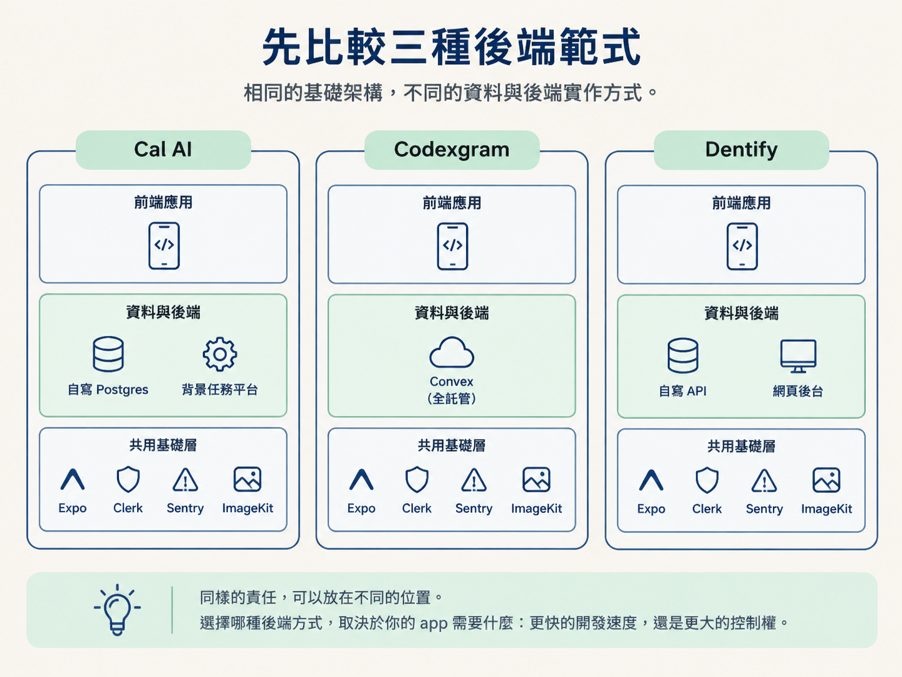
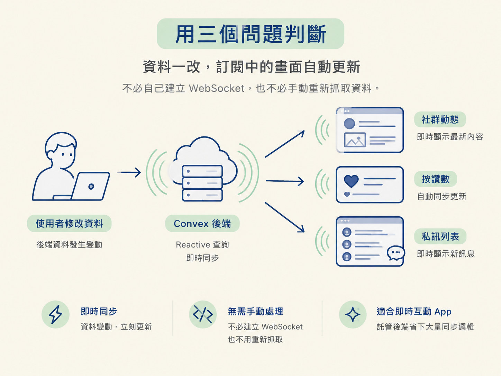
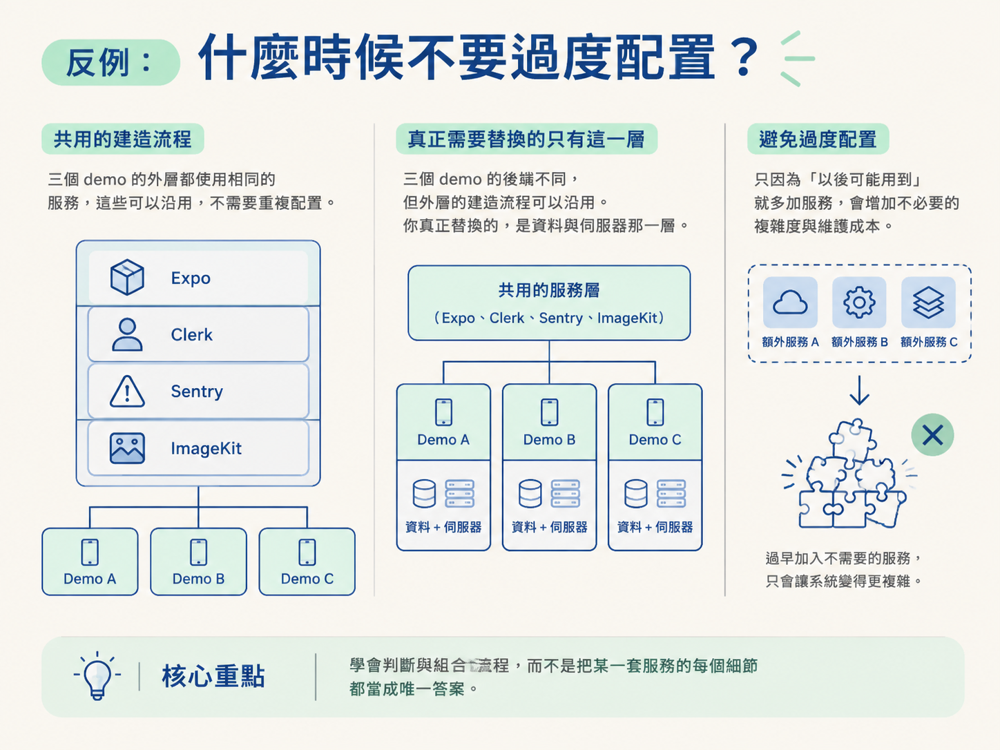

功能範圍砍成 V1 之後，還有一個不能一直拖到「以後再說」的決定：資料要放在哪裡、登入交給誰、畫面與後端要怎麼連接。
很多人會先把畫面做出來，心想後端之後再處理。但後端的選擇會影響資料怎麼寫、請求怎麼傳遞，以及非同步工作怎麼執行。這些決定一旦開始累積，就像房子的地基，之後想整組更換，代價會很高。
這一節的目標，是讓你能在規劃階段明確指定 auth、後端與樣式的組合，並根據 app 的特性，選出適合自己的後端範式。能對著自己的 app 說出「它屬於這一類，所以我選這一套」，比背一份技術清單更有用。
課程用三個 demo app 示範同一條 pipeline 的三種做法。三者的外層都使用 Expo／React Native，登入都使用 Clerk，監控都使用 Sentry，圖片都使用 ImageKit；真正不同的是資料與後端怎麼組成。
| Demo app | 後端範式 | 資料層與背景任務 | 適合什麼 |
|---|---|---|---|
| Cal AI（熱量追蹤） | 自寫 Postgres + 背景任務平台 | Neon Postgres、Drizzle、trigger.dev | 消費型 app，有長時、易失敗的 AI 分析工作 |
| Codexgram（社群） | 全託管後端（Convex） | Convex 的 schema／queries／mutations，內建 reactive 查詢與檔案儲存 | 大量即時更新、社群或訊息類 app |
| Dentify（診所） | 自寫 API + 網頁後台 | Next.js Route Handlers、Drizzle、Neon、Stream | local business，需要網頁 dashboard 與複雜關聯模型 |
這三套沒有誰比較高級。它們只是把相同的責任放在不同位置。
Convex 把伺服器與即時同步託管起來，開發速度快一些；自寫 API 把控制權留在你手上，自由更大，但也要自己維護更多事情。至於該選哪一套，就看它貼不貼合你的 app，跟流不流行沒關係。

接著對自己的 app 逐一提問。每個答案，都會把你推向不同的後端範式。
一、是否有長時間、而且容易失敗的背景工作？
例如，餐點照片交給 AI 分析，可能要花 10 到 15 秒，也可能在分析到一半時失敗。這種工作不適合塞在手機請求的生命週期裡等待，否則使用者只能盯著轉圈圈；一旦工作失敗，整個請求也可能跟著失敗。
Cal AI 因此把這類工作交給 trigger.dev：在它的基礎設施上執行，沒有逾時限制，會自動重試，也能把進度即時回報給畫面。如果你的 app 也有這類長時間、容易失敗的工作，就需要考慮背景任務平台。
二、是否依賴「資料一變，畫面就馬上跟著變」？
社群動態、按讚數、私訊列表，都希望別人的操作能即時反映在你的畫面上。這類 app 除了把資料存起來，還得讓多個畫面持續同步。
Codexgram 選擇 Convex，正是因為它把 reactive 查詢做成後端的基本能力。你寫好查詢之後，資料一改，訂閱中的畫面就會自動更新，不必自己建立 WebSocket，也不必手動重新抓取資料。如果你的 app 靠即時互動運作，託管後端可以省下大量同步邏輯。

三、是否需要網頁後台，或有很強的關聯式領域模型？
診所需要讓櫃檯人員用電腦管理預約、病患與醫師排班。這些資料彼此有清楚的關聯，也有不少需要維護的規則。
Dentify 因此選擇 Next.js Route Handlers 加上 Drizzle／Neon：用熟悉的關聯式資料庫建模，員工後台直接透過 Server Components 讀取資料庫，手機端則透過有型別、受保護的 API 取用資料。如果你的 app 屬於 local business，需要提供員工使用的網站介面，這種「自寫 API + 網頁後台」的組合會比較直接。
這三個問題是用來避免選錯，不是要你把所有服務都裝上一輪。規則也有會翻轉的時候：V1 根本還不需要某項能力時，就不要因為「以後可能用到」而提前承擔複雜度。
例如，既然 V1 已經把推播、付款、影片都砍掉了，就不必先接一整套背景任務或影音服務。工具越多，不代表 app 越完整；沒有實際需求時，它們只會增加設定、維護與除錯的負擔。
還有一點不能忽略：平台規則。不論你選哪一套後端，只要 app 提供社群登入，就會牽涉 Apple 的規定：app 提供 Google 登入，就必須同時提供 Apple 登入，否則會被拒絕上架。這是選 auth 時就要一起確認的條件，不是送審時才補救的問題。
還有一點值得留意：三個 demo 的後端不同，但外層都使用 Expo、Clerk、Sentry 與 ImageKit。也就是說，你真正替換的只有資料與伺服器那一層，其他建造流程可以沿用。要學的是怎麼判斷與組合流程，不用把某一套服務的每個細節都當成唯一答案。

做完判斷後，請把結果固定下來：auth、後端、樣式各選什麼，以及你為什麼這樣選。這份決定會成為後續工作的依據，也能避免團隊在開發途中反覆爭論同一件事。
可以直接使用這份檢查表：
- 有長時間、容易失敗的背景工作嗎？有的話，選背景任務平台，例如 trigger.dev。
- 畫面是否依賴資料即時變化？有的話，考慮託管後端，例如 Convex。
- 是否需要網頁後台或複雜的關聯式資料模型？有的話，考慮自寫 API，例如 Next.js + Drizzle／Neon。
- 是否只因為「以後可能需要」而提前加入服務？如果是，先不要配置。
- 如果提供 Google 登入，是否同時提供 Apple 登入？
三種範式可以共用 Expo、Clerk、Sentry、ImageKit；你主要是在選資料層與伺服器的放置方式。
到這裡，你已經完成訪談、砍好 V1 範圍，也選定了技術。下一步，就是把這些散落在對話裡的決定整理成固定文件，讓它成為接下來所有工作的依據，也就是 plan.md。